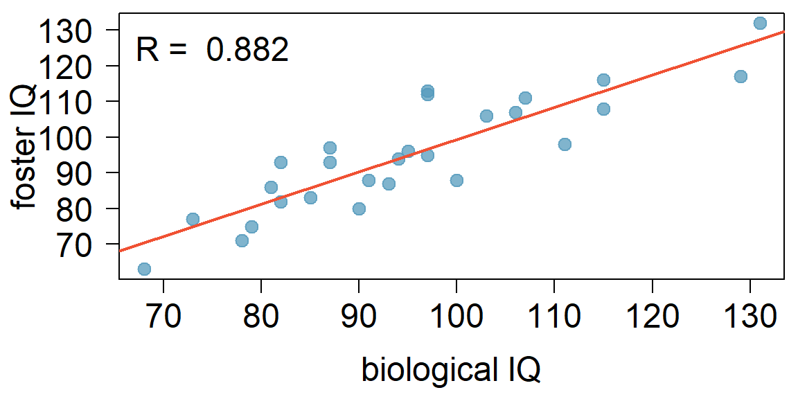
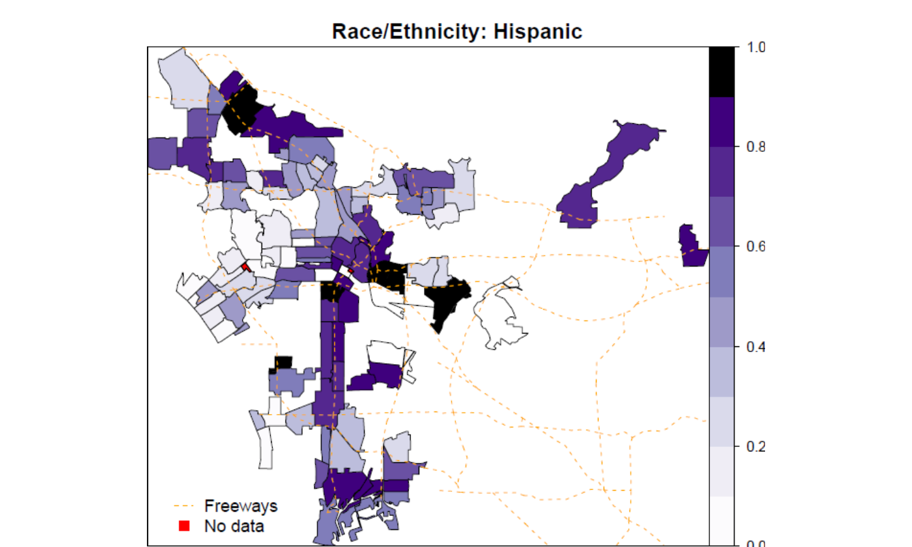
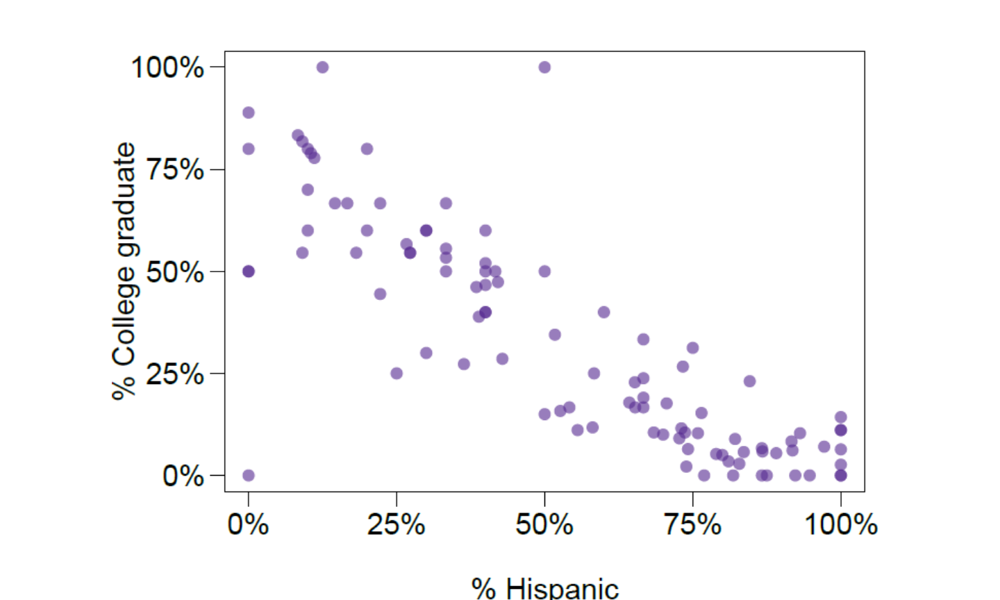

These notes use content from OpenIntro Statistics Slides by
Mine Cetinkaya-Rundel.
These notes use content from OpenIntro Statistics Slides by
Mine Cetinkaya-Rundel.
In 1966 Cyril Burt published a paper called “The genetic determination of differences in intelligence: A study of monozygotic twins reared together and apart”. The data consist of IQ scores for [an assumed random sample of] 27 identical twins, one raised by foster parents, the other by the biological parents.

Which of the following is \(\underline{false}\)?
## ## Call: ## lm(formula = twins$Foster ~ twins$Biological) ## ## Residuals: ## Min 1Q Median 3Q Max ## -11.3512 -5.7311 0.0574 4.3244 16.3531 ## ## Coefficients: ## Estimate Std. Error t value Pr(>|t|) ## (Intercept) 9.20760 9.29990 0.990 0.332 ## twins$Biological 0.90144 0.09633 9.358 1.2e-09 *** ## --- ## Signif. codes: 0 '***' 0.001 '**' 0.01 '*' 0.05 '.' 0.1 ' ' 1 ## ## Residual standard error: 7.729 on 25 degrees of freedom ## Multiple R-squared: 0.7779, Adjusted R-squared: 0.769 ## F-statistic: 87.56 on 1 and 25 DF, p-value: 1.204e-09
A) Additional 10 points in the biological twin’s IQ is associated with additional 9 points in the foster twin’s IQ, on average.
B) Roughly 78% of the foster twins’ IQs can be accurately predicted by the model.
C) The linear model is \(\widehat{fosterIQ} = 9.2 + 0.9 \times bioIQ\).
D) Foster twins with IQs higher than average IQs tend to have biological twins with higher than average IQs as well.
Which of the following is \(\underline{false}\)?
## ## Call: ## lm(formula = twins$Foster ~ twins$Biological) ## ## Residuals: ## Min 1Q Median 3Q Max ## -11.3512 -5.7311 0.0574 4.3244 16.3531 ## ## Coefficients: ## Estimate Std. Error t value Pr(>|t|) ## (Intercept) 9.20760 9.29990 0.990 0.332 ## twins$Biological 0.90144 0.09633 9.358 1.2e-09 *** ## --- ## Signif. codes: 0 '***' 0.001 '**' 0.01 '*' 0.05 '.' 0.1 ' ' 1 ## ## Residual standard error: 7.729 on 25 degrees of freedom ## Multiple R-squared: 0.7779, Adjusted R-squared: 0.769 ## F-statistic: 87.56 on 1 and 25 DF, p-value: 1.204e-09
Roughly 78% of the foster twins’IQs can be accurately predicted by the model.
C) The linear model is \(\widehat{fosterIQ} = 9.2 + 0.9 \times bioIQ\).
D) Foster twins with IQs higher than average IQs tend to have biological twins with higher than average IQs as well.
Assuming that these 27 twins comprise a representative sample of all twins separated at birth, we would like to test if these data provide convincing evidence that the IQ of the biological twin is a significant predictor of IQ of the foster twin. What are the appropriate hypotheses?
\(H_0: b_0 = 0; H_A: b_0 \ne 0\)
\(H_0: \beta_0 = 0; H_A: \beta_0 \ne 0\)
\(H_0: b_1 = 0; H_A: b_1 \ne 0\)
\(H_0: \beta_1 = 0; H_A: \beta_1 \ne 0\)
Assuming that these 27 twins comprise a representative sample of all twins separated at birth, we would like to test if these data provide convincing evidence that the IQ of the biological twin is a significant predictor of IQ of the foster twin. What are the appropriate hypotheses?
\(H_0: b_0 = 0; H_A: b_0 \ne 0\)
\(H_0: \beta_0 = 0; H_A: \beta_0 \ne 0\)
\(H_0: b_1 = 0; H_A: b_1 \ne 0\)
\(H_0: \beta_1 = 0; H_A: \beta_1 \ne 0\)
\[ \begin{eqnarray*} \hline Estimate && Std. Error && t value && Pr(>|t|) \\ \hline \text{(Intercept)} && 9.2076 && 9.2999 && 0.99 && 0.3316 \\ \text{bioIQ} && 0.9014 && 0.0963 && 9.36 && 0.0000\\ \hline \end{eqnarray*} \]
We always use a \(t\)-test in inference for regression. \(\:\)
\(\color{red}{Test \hspace{0.2cm} statistic, T = \frac{point~estimate - null~value}{SE}}\)
Point estimate = \(b_1\) is the observed slope.
\(SE_{b_1}\) is the standard error associated with the slope.
Degrees of freedom associated with the slope is \(df = n - 2\), where \(n\) is the sample size.
We lose 1 degree of freedom for each parameter we estimate, and in simple linear regression we estimate 2 parameters}, \(\beta_0\) and \(\beta_1.\)
\(H_0: \beta_1 = 0; H_A: \beta_1 \ne 0\)
\[ \begin{eqnarray*} \hline & Estimate & Std. Error & t value & Pr(>|t|) \\ \hline (Intercept) & 9.2076 & 9.2999 & 0.99 & 0.3316 \\ bioIQ & \color{orange}{0.9014} & \color{green}{0.0963} & \color{orange}{9.36} & \color{blue}{0.0000} \\ \hline \end{eqnarray*} \]\[ \begin{eqnarray*} T &=& \frac{\color{orange}{0.9014} - 0}{\color{green}{0.0963}} = \color{orange}{9.36} \\ df &=& 27 - 2 = 25 \\ p-value &=& P(|T| > \color{orange}{9.36}) < \color{blue}{0.01} \end{eqnarray*} \]
What can you say about the relationship between % college graduate and % Hispanic in a sample of 100 zip code areas in LA?

What can you say about the relationship between of % college graduate and % Hispanic in a sample of 100 zip code areas in LA?

Which of the below is the best interpretation of the slope?
\[ \begin{eqnarray*} \hline & Estimate & Std. Error & t value & Pr(>|t|) \\ \hline (Intercept) & 0.7290 & 0.0308 & 23.68 & 0.0000 \\ \%Hispanic & -0.7527 & 0.0501 &-15.01 & 0.0000 \\ \hline \end{eqnarray*} \]
1% increase in Hispanic residents in a zip code area in LA is associated with a 75% decrease in % of college grads, on average.
1% increase in Hispanic residents in a zip code area in LA is associated with a 0.75% decrease in % of college grads, on average.
An additional 1% of Hispanic residents decreases the % of college graduates in a zip code area in LA by 0.75%.
In zip code areas with no Hispanic residents, % of college graduates is expected to be 75%.
Which of the below is the best interpretation of the slope?
\[ \begin{eqnarray*} \hline & Estimate & Std. Error & t value & Pr(>|t|) \\ \hline (Intercept) & 0.7290 & 0.0308 & 23.68 & 0.0000 \\ \%Hispanic & -0.7527 & 0.0501 & -15.01 & 0.0000 \\ \hline \end{eqnarray*} \]
1% increase in Hispanic residents in a zip code area in LA is associated with a 75% decrease in % of college grads, on average.
An additional 1% of Hispanic residents decreases the % of college graduates in a zip code area in LA by 0.75%.
In zip code areas with no Hispanic residents, % of college graduates is expected to be 75%.
Do these data provide convincing evidence that there is a statistically significant relationship between % Hispanic and % college graduates in zip code areas in LA?
\[ \begin{eqnarray*} \hline & Estimate & Std. Error & t value & Pr(>|t|) \\ \hline (Intercept) & 0.7290 & 0.0308 & 23.68 & 0.0000 \\ \%Hispanic & -0.7527 & 0.0501 & -15.01 & 0.0000 \\ \hline \end{eqnarray*} \]
Yes, the p-value for % Hispanic is low, indicating that the data provide convincing evidence that the slope parameter is different than 0.
How reliable is this p-value if these zip code areas are not randomly selected?
Not very…
Remember that a confidence interval is calculated as \(point~estimate \pm ME\) and the degrees of freedom associated with the slope in a simple linear regression is \(n - 2\). Which of the below is the correct 95% confidence interval for the slope parameter? Note that the model is based on observations from 27 twins.
\[ \begin{eqnarray*} \hline & Estimate & Std. Error & t value & Pr(>|t|) \\ \hline (Intercept) & 9.2076 & 9.2999 & 0.99 & 0.3316 \\ bioIQ & 0.9014 & 0.0963 & 9.36 & 0.0000 \\ \hline \end{eqnarray*} \]
\(9.2076 \pm 1.65 \times 9.2999\)
\(0.9014 \pm 2.06 \times 0.0963\)
\(0.9014 \pm 1.96 \times 0.0963\)
\(9.2076 \pm 1.96 \times 0.0963\)
Remember that a confidence interval is calculated as \(point~estimate \pm ME\) and the degrees of freedom associated with the slope in a simple linear regression is \(n - 2\). Which of the below is the correct 95% confidence interval for the slope parameter? Note that the model is based on observations from 27 twins.
\[ \begin{eqnarray*} \hline & Estimate & Std. Error & t value & Pr(>|t|) \\ \hline (Intercept) & 9.2076 & 9.2999 & 0.99 & 0.3316 \\ bioIQ & 0.9014 & 0.0963 & 9.36 & 0.0000 \\ \hline \end{eqnarray*} \]
\(9.2076 \pm 1.65 \times 9.2999\)
\(\color{red}{0.9014 \pm 2.06 \times 0.0963}\)
\(0.9014 \pm 1.96 \times 0.0963\)
\(9.2076 \pm 1.96 \times 0.0963\)
\[n=27 \qquad df = 27 - 2 = 25 \\95\%:~t^\star_{25} = 2.06 \\0.9014 \pm 2.06 \times 0.0963 \\(0.7 , 1.1)\]
Inference for the slope for a single-predictor linear regression model:
Hypothesis test: \[ T = \frac{b_1 - null~value}{SE_{b_1}} \qquad df = n - 2 \]
Confidence interval: \[ b_1 \pm t^\star_{df = n - 2} SE_{b_1} \]
The null value is often 0 since we are usually checking for any relationship between the explanatory and the response variable.
The regression output gives \(b_1\), \(SE_{b_1}\), and two-tailed p-value for the \(t\)-test for the slope where the null value is 0.
We rarely do inference on the intercept, so we’ll be focusing on the estimates and inference for the slope.
Always be aware of the type of data you’re working with: random sample, non-random sample, or population.
Statistical inference, and the resulting p-values, are meaningless when you already have population data.
If you have a sample that is non-random (biased), inference on the results will be unreliable.
The ultimate goal is to have independent observations.